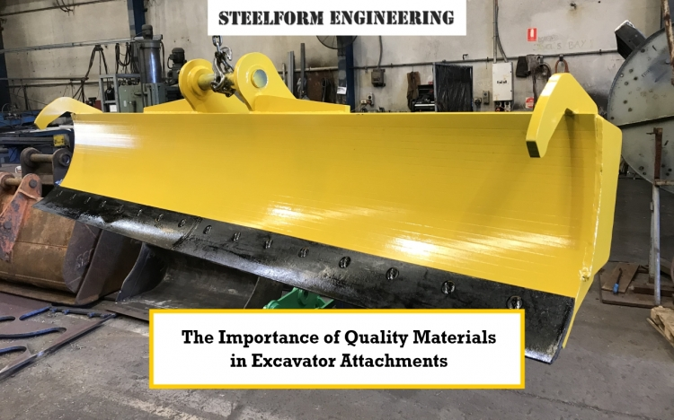

Importance of Quality Materials in Excavator Attachments
In the tough and unique world of construction and excavation, your machine's performance is only as good as the tools on it. An excavator is an engineering marvel, but its successful operation is based on attachments. Steelform Engineering knows that not all attachments are created equal, and many have differences primarily because of the quality of materials. Using quality excavator attachments is important for productivity, safety, and profitability, and it's something that every serious operator should demand.
Why Is Material Quality Important In Excavator Attachments?
An excavator attachment is subject to constant friction, pounding of impact, and immense stress every day. Whether it is a bucket accessing a hard soil subgrade or a hydraulic breaker pounding concrete, these pieces of equipment know conditions that would degrade inferior materials in record time. Here is why the material quality is so important:
- Durability and Longevity: With quality attachments, they are very durable. When manufacturers use premium-grade steel and other quality materials, the attachment will tolerate heavy use for much longer. Durable and longer-lasting attachments will mean fewer replacements, costing you less to operate your machine over the lifecycle of your investment.
- Reduced Maintenance and Downtime: Attachments made of inferior materials will crack, bend, and wear out prematurely. You will spend more for repairs and, more importantly, unscheduled downtime. Each hour an excavator is on the sidelines because of a repair is an hour of lost production and revenues. Take wear-resistant excavator bucket material, for example; if used properly, it will extend time intervals for maintenance noticeably and will keep your project moving along on schedule.
Understanding Wear-Resistant Materials
When it relates to excavator attachments, not all steel is the same. The extreme forces of excavating in dirt, rock, and concrete place incredibly tough stress on buckets, rippers, and grapples. This is why choosing wear-resistant materials for excavator buckets is paramount. Common materials used that would be considered well-designed for an attachment include:
- High-Strength Low-Alloy (HSLA) Steels: HSLA steels can be tough and have an excellent strength-to-weight ratio, and provide good durability without the bulk of extra material and weight that could affect the fuel efficiency and lifting capacity of the excavator.
- Abrasion-Resistant (AR) Steels: These types of steels are intended to resist any kind of abrasive wear, and so AR steels would likely be ideal for areas of high impact and friction, such as on the cutting edge and wear plates of an excavator bucket. Common AR grades would include AR400, AR450, and AR500, where the level of hardness and wear resistance increases with the numbers.
- Manganese Steel: This stainless steel work-hardens, meaning it becomes harder the more you hit it. Manganese steel would be ideal for heavy components that need to absorb the most violent blows, as it has the ultimate impact resistance.
- Hardox® and Similar Proprietary Steel: These are high-performance wear-resistant steels that provide outstanding hardness, toughness, and bendability, making for elaborate designs able to withstand extreme conditions and exponentially increase attachment longevity. A more inferior or even inappropriate material may save a few dollars on the front end, which may be a false economy very quickly when you have to absorb the increased time and costs of operating equipment that fails regularly and presents toil opportunities of frustration.
Excavator Attachment Quality vs. ROI
The relationship between excavator attachment quality and your ROI is both direct and powerful. Think about all the ways spending slightly more for an attachment that is made from superior materials is rewarding you financially:
- Extended Usability: High-quality materials experience less wear than lower-quality materials.
You, therefore, can use the attachment longer before you replace it. When an attachment can
operate in effective ways for one extra month or year, it is deposited as savings to your bottom
line.
- Less Downtime: When you have a failure and an attachment breaks, your excavator is
nonproductive. A downed excavator also lost productivity, missed deadlines, and lost revenue.
Attachments created using wear-resistant excavator bucket materials are less likely to suffer
unexpected breakage and facilitate uptime for your equipment.
- Reduction in Maintenance Costs: Fewer repairs mean less labour for your mechanics and
less money on replacement parts. High-quality attachments will last longer, which means less
welding, patching, or tooth changes.
- Better Performance: Long-lasting materials maintain their structure and functionality longer.
Because the material has long-lasting performance, your excavator is more productive because
it can complete the tasks quicker with less impact on the machine, saving you time and possibly
fuel costs with less strain on the machine.
- Safer: Deteriorating or failed attachments can be a huge safety concern on-site. If you can
invest in strong and well-constructed attachments, you may have more reliable equipment for
the whole duration your crew is relying on the equipment, avoiding health and safety issues
and costs from accidents.
Conclusion
At Steelform Engineering, our commitment to providing quality excavator attachments begins with our meticulous selection of materials. We understand that our clients rely on their equipment day in and day out, often in unforgiving conditions. That’s why material quality matters in excavator attachments so profoundly to us. We rigorously source and utilise proven wear-resistant excavator bucket materials and other high-grade steels to manufacture attachments that are built to last, designed to perform, and engineered to deliver exceptional excavator attachment quality vs. ROI.
Choosing the right attachments isn't just about fitting a part to a machine; it's about making a strategic business decision that impacts your productivity, profitability, and safety. Don't compromise on quality your success depends on it.